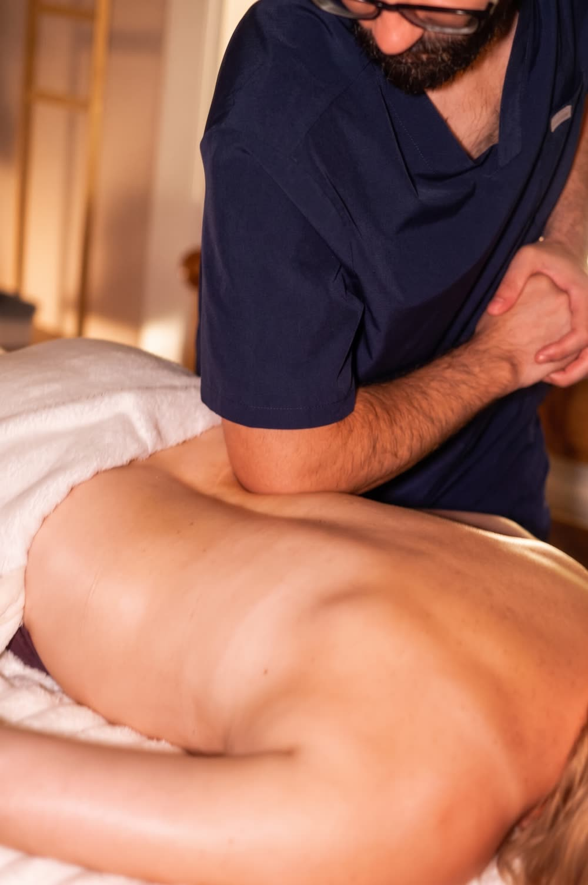

Masaże ciała · Poznań
Masaż dla ciała, które trenuje. Regeneracja po wysiłku, praca nad partiami, które biorą na siebie najwięcej, i przygotowanie mięśni przed startem. Tempo i nacisk dobieramy do tego, gdzie jesteś w cyklu treningowym.

Na czym polega
Masaż sportowy zaczynamy od pytania, co robisz i kiedy. Inaczej pracuje się z kimś, kto ma zawody za trzy dni, a inaczej z kimś, kto właśnie skończył sezon. Pytamy o dyscyplinę, objętość treningów, dawne kontuzje i to, która partia odzywa się jako pierwsza, gdy obciążenie rośnie.
Potem pracujemy tam, gdzie Twój sport zbiera daninę: u biegaczy zwykle łydki, uda i biodra, na siłowni grzbiet i obręcz barkowa, u rowerzystów odcinek lędźwiowy i kark. Rozgrzewamy, rozluźniamy głębsze warstwy, w razie potrzeby dokładamy rozciąganie — a nacisk trzymamy na granicy komfortu, nie za nią.

Korzyści
Gdy mięśnie zostają ciężkie i spięte dłużej, niż powinny, a kolejna jednostka wychodzi słabiej.
Lżejsza wersja na 2–3 dni przed zawodami — rozluźnia, nie zostawiając ciała obolałego.
Dla miejsca, które odzywa się za każdym razem, gdy zwiększasz objętość albo intensywność.
Nie tylko dla sportowców — także jeśli dźwigasz, stoisz cały dzień albo pracujesz rękami.
Jak przebiega zabieg
Dyscyplina, objętość treningów, najbliższe starty i historia kontuzji.
Ustalamy partie i intensywność — inne przed zawodami, inne w okresie budowania formy.
Rozgrzanie, praca nad wybranymi grupami mięśni, w razie potrzeby rozciąganie.
Co robić w kolejnych 48 godzinach i kiedy wrócić przy Twoim planie treningowym.
Czas trwania i cena
Na jedną partię — nogi po długim biegu albo obręcz barkowa — wystarczy godzina. Jeśli chcesz objąć całe ciało i zostawić czas na rozciąganie, wybierz dłuższy wariant.
Przeciwwskazania
Świeży uraz to nie zadanie dla masażu. Jeśli coś strzeliło w trakcie treningu, spuchło albo boli przy każdym ruchu — najpierw lekarz lub fizjoterapeuta. Do nas wróć z rozpoznaniem, wtedy praca nad okolicą urazu ma sens i jest bezpieczna.
FAQ
Nie. Nazwa mówi o sposobie pracy, nie o tym, kto leży na stole. Przychodzą na niego biegacze i osoby z siłowni, ale też ludzie, którzy dużo chodzą, dźwigają albo pracują fizycznie. Liczy się to, że mięśnie są obciążane regularnie i potrzebują wsparcia w regeneracji.
Masaż przygotowujący do startu robimy zwykle na 2–3 dni przed zawodami i prowadzimy go lżej, żeby mięśnie zdążyły się wyciszyć. Mocnej, głębokiej pracy tuż przed startem unikamy — potrafi zostawić ciało obolałe na kolejny dzień. Po zawodach najlepiej przyjść po 24–48 godzinach.
Bywa intensywny, ale nie powinien być bolesny. Pracujemy na granicy komfortu, którą ustalamy z Tobą na bieżąco — masaż, przy którym trzeba zaciskać zęby, napina mięśnie zamiast je rozluźniać. Nacisk regulujemy w trakcie, wystarczy powiedzieć słowo.
Tkanki głębokie to sposób pracy — powolny, punktowy nacisk na głębsze warstwy. Masaż sportowy to cel: przygotowanie albo regeneracja ciała, które trenuje. Często korzysta z technik głębokich, ale dokłada do nich szybsze rozgrzewanie, rozciąganie i pracę nad grupami mięśni obciążanymi w Twojej dyscyplinie.
Przy regularnych treningach dobrze działa rytm co 2–3 tygodnie. W okresie zwiększonych obciążeń albo przygotowań startowych część osób przychodzi co tydzień. Jeśli trenujesz rekreacyjnie, raz w miesiącu zwykle wystarcza, żeby napięcia się nie kumulowały.
Więcej o tym, co dzieje się z mięśniami po wysiłku, piszemy w artykule Jak masaż wspiera regenerację po treningu.
Rezerwacja online
Wybierz dogodny termin online — potwierdzenie otrzymasz od razu.
Używamy niezbędnych plików cookies, żeby strona działała. Za Twoją zgodą chcemy też korzystać z Google Analytics, żeby wiedzieć, które podstrony są przydatne. Wybór możesz zmienić w każdej chwili. Szczegóły w polityce prywatności.
Potrzebne do działania strony i zapamiętania Twojego wyboru. Nie można ich wyłączyć.
Google Analytics — zagregowane statystyki odwiedzin. Domyślnie wyłączone.